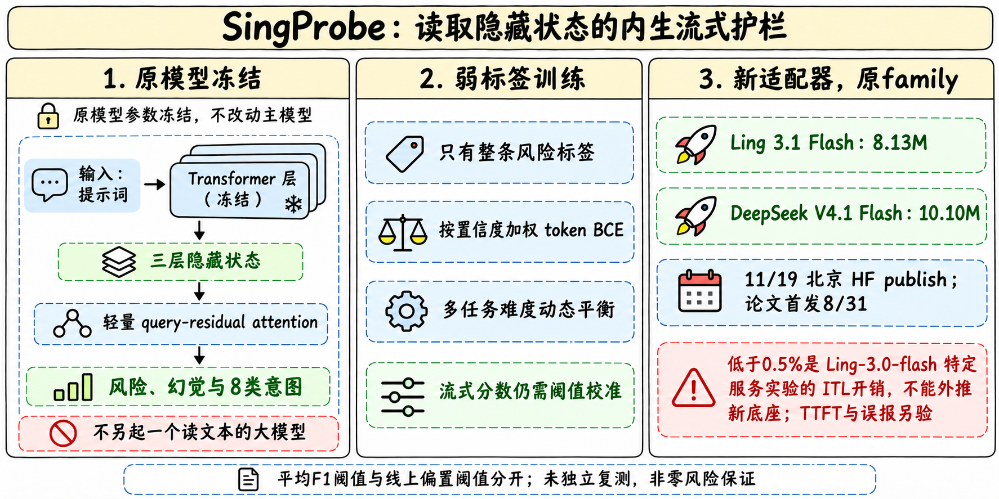
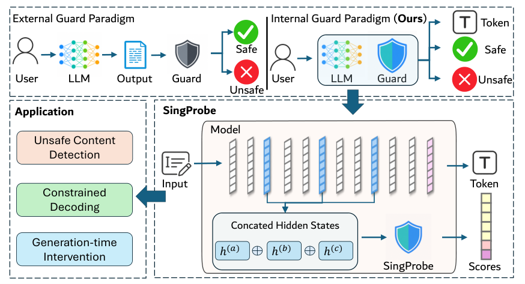

内生探针与训练目标


统一输出八类意图+risk+hallucination。query risk为七个非安全类别多标签+safe互斥约束；动态EMA任务权重alpha=.9、floor1e-9按近期任务难度分配，不是简单固定平均。response/hallucination用粗序列标签监督token BCE，再按模型置信度加权；beta=clip(std(p)/tau,0,1)，早期近均匀避免错误尖峰被过度强化。权重按样本归一，不能让长文本天然多占loss。
弱标签并非每个token都是真实局部注释：危险回应也含正常前缀，训练对这类token的负惩罚做置信度调节。流式提前截断与全序列事后分类是不同任务，必须分别给AUC、误报和延迟。
两份新增探针与完整卡表
| 本轮适配器 | 参数 | 取层 | attention |
|---|---|---|---|
| Ling3.1Flash1019 | 8.13M | 23/47/71 | 8heads、head64、BF16 |
| DeepSeekV4.1Flash1017 | 10.10M | 12/25/39 | 同配置 |
默认三层间隔选择，probe attention上限约2Ktokens。原报告讨论29个底座适配，主要实验围绕Ling3.0tiny/flash；不能将该数量写成本轮新发布29个。
| Base model | Probe parameters | Tapped layers (zero-based) | Outputs |
|---|---|---|---|
Ling-3.1-flash-1019 | 8.13M | [23, 47, 71] | 8 query intents + response unsafety + hallucination |
| Task | Metric | Ling-3.1-flash-1019-singprobe | Reference baseline |
|---|---|---|---|
| Query intent classification (6 benchmarks) | F1 | 0.8687 | YuFeng-XGuard-Reason-8B (0.8714) |
| Response safety classification (8 benchmarks) | F1 | 0.8707 | Qwen3Guard-Gen-8B-strict (0.8604) |
| Streaming safety (3 benchmarks) | Response AUC / token AUC | 0.9844 / 0.9411 | Qwen3Guard-Stream-8B-strict (0.9640 / 0.8893) |
| Hallucination detection (6 benchmarks) | AUC | 0.8041 | DRIFT (0.8000) |
| Deployment characteristic | Result |
|---|---|
| Benign-response false-positive rate | 0.008% averaged over 5 datasets at the evaluation's pre-calibration response threshold of 0.983085 |
| Calibrated release thresholds | 0.5 for response unsafety and 0.5 for hallucination |
| Base model | Probe parameters | Tapped layers (zero-based) | Outputs |
|---|---|---|---|
DeepSeek-V4.1-Flash-1017 | 10.10M | [12, 25, 39] | 8 query intents + response unsafety + hallucination |
| Task | Metric | DeepSeek-V4.1-Flash-1017-singprobe | Reference baseline |
|---|---|---|---|
| Query intent classification (6 benchmarks) | F1 | 0.8756 | YuFeng-XGuard-Reason-8B (0.8714) |
| Response safety classification (8 benchmarks) | F1 | 0.8668 | Qwen3Guard-Gen-8B-strict (0.8604) |
| Streaming safety (3 benchmarks) | Response AUC / token AUC | 0.9907 / 0.9522 | Qwen3Guard-Stream-8B-strict (0.9640 / 0.8893) |
| Hallucination detection (6 benchmarks) | AUC | 0.7951 | DRIFT (0.8000) |
| Deployment characteristic | Result |
|---|---|
| Benign-response false-positive rate | 0.009% averaged over 5 datasets at the evaluation's pre-calibration response threshold of 0.987179 |
| Calibrated release thresholds | 0.5 for response unsafety and 0.5 for hallucination |
Ling query F1 .8687低于对照.8714，而response .8707高于.8604；hallu .8041略高于DRIFT .8。DeepSeek query .8756、response .8668、stream response AUC .9907/token .9522，而hallu .7951低于.8。多任务不是每项都更好。
数据、离线聚合与线上阈值
query F1在generated responses、response F1在benchmark responses，macro给benchmark等权，不能合成一个混合分母。Ling低误报点为预校准阈值.983085、FPR .008%；DeepSeek .987179、FPR .009%，均为五数据集平均，不能报告任意线上分布同样误报。
报告线上majority/leave-one-out用其他三个detector构造pseudo ground truth，不是人工真值；Ling3.0Flash accuracy.9641、F1.6452，Tiny .8089/.4726。类不平衡下accuracy很高仍可能F1低，线上F1也不能直接和离线自适应阈值比较。
训练材料/bench覆盖与逐token弱标签偏差会影响跨语言、长上下文和对抗改写泛化。本轮未审计全部原始数据，医疗子模型另为专项范围，未将其效果填入通用探针。
开销实验完整条件
| 并发 | Decode TTFT Δ% | Decode ITL Δ% | Prefill TTFT Δ% | Prefill ITL Δ% |
|---|---|---|---|---|
| 1 | +.68±.22 | +.18±.15 | +.89±.29 | +.18±.15 |
| 2 | −1.45±4.17 | +.33±.12 | +2.25±4.86 | +.33±.12 |
| 4 | −1.91±5.97 | +.30±.12 | +1.85±7.77 | +.38±.10 |
| 8 | +.39±1.84 | +.26±.09 | +1.01±.53 | +.21±.12 |
| 16 | +.06±3.57 | +.42±.09 | +.86±1.15 | +.39±.12 |
| 32 | +1.14±.93 | +.45±.18 | +1.34±.37 | +.47±.15 |
输入8192、输出1024；并发1/2/4每轮24prompt、8为48、16/32为96，8个独立round。同round先算中位TTFT/ITL再配对基座，报告配对相对差的均值±标准差。TTFT负值可为噪声，不能称探针加速prefill；prefill-enabled的ITL .18–.47%、TTFT .86–2.25%。不能外推本轮两底座或不同服务框架。
对Agent训练的判断与来源
固定底座、层位、token窗口、量化、服务版本和阈值，在独立干净/危险/幻觉集合上测PR曲线、早停位置与误伤；同时比较文本detector的质量和全成本。若用于RL，单独设不可见holdout与不同判定器，评估reward hacking与校准漂移。
公开GitHub和卡中SGLang分支/内部托管路径不完全一致，不能保证安装即可运行。没有本轮加载、服务兼容性和线上复测；原件保留实际链接而不执行其中命令。